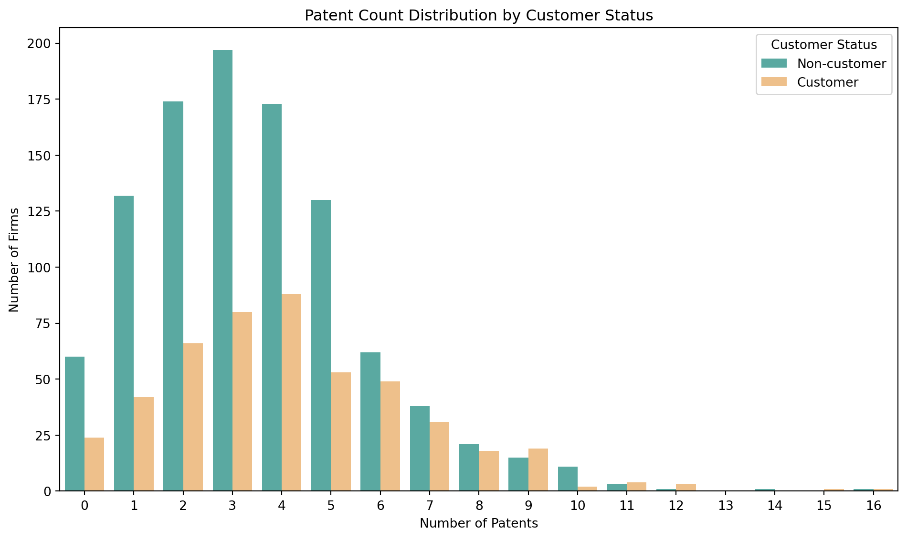
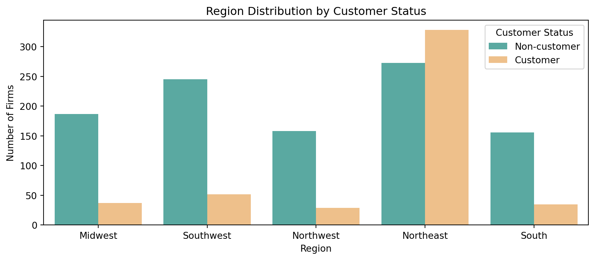
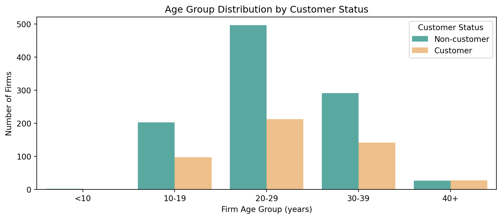
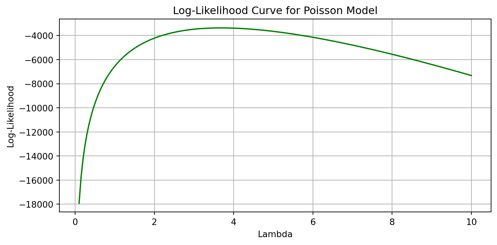

import pandas as pd
df = pd.read_csv("blueprinty.csv")
df.head()| patents | region | age | iscustomer | |
|---|---|---|---|---|
| 0 | 0 | Midwest | 32.5 | 0 |
| 1 | 3 | Southwest | 37.5 | 0 |
| 2 | 4 | Northwest | 27.0 | 1 |
| 3 | 3 | Northeast | 24.5 | 0 |
| 4 | 3 | Southwest | 37.0 | 0 |
Shuyang Zhang
May 4, 2025
Blueprinty is a small firm that makes software for developing blueprints specifically for submitting patent applications to the US patent office. Their marketing team would like to make the claim that patent applicants using Blueprinty’s software are more successful in getting their patent applications approved. Ideal data to study such an effect might include the success rate of patent applications before using Blueprinty’s software and after using it. Unfortunately, such data is not available.
However, Blueprinty has collected data on 1,500 mature (non-startup) engineering firms. The data include each firm’s number of patents awarded over the last 5 years, regional location, age since incorporation, and whether or not the firm uses Blueprinty’s software. The marketing team would like to use this data to make the claim that firms using Blueprinty’s software are more successful in getting their patent applications approved.
| patents | region | age | iscustomer | |
|---|---|---|---|---|
| 0 | 0 | Midwest | 32.5 | 0 |
| 1 | 3 | Southwest | 37.5 | 0 |
| 2 | 4 | Northwest | 27.0 | 1 |
| 3 | 3 | Northeast | 24.5 | 0 |
| 4 | 3 | Southwest | 37.0 | 0 |
import seaborn as sns
import matplotlib.pyplot as plt
import numpy as np
# Data Cleaning (using df_clean)
df_clean = (
df[df['iscustomer'].isin([0, 1])]
.dropna(subset=['patents'])
.copy()
)
df_clean['customer_status'] = df_clean['iscustomer'].map({1: "Customer", 0: "Non-customer"})
palette = ["#4DB6AC", "#FFC17A"] # Non-customer / Customer
# Grouped Bar Plot
plt.figure(figsize=(10,6))
max_pat = int(df_clean['patents'].max())
sns.countplot(
data=df_clean,
x='patents',
hue='customer_status',
order=list(range(0, max_pat + 1)), # Ensure 0,1,2,… order
palette=palette
)
plt.xticks(np.arange(0, max_pat + 1, 1)) # Integer ticks
plt.xlabel("Number of Patents")
plt.ylabel("Number of Firms")
plt.title("Patent Count Distribution by Customer Status")
plt.legend(title="Customer Status")
plt.tight_layout()
plt.show()
df.groupby("iscustomer")["patents"].agg(["mean", "count"]).round({"mean": 4})
| mean | count | |
|---|---|---|
| iscustomer | ||
| 0 | 3.4730 | 1019 |
| 1 | 4.1331 | 481 |
Average patents: Firms that are Blueprinty customers hold approximately 4.13 patents on average, while non-customers hold approximately 3.47. The mean gap is about 0.7 patents, roughly 20% higher for customers.
Distribution shape: Both groups peak around 2 to 4 patents, but the customer distribution is slightly shifted right and has a fatter right tail, with more firms holding 6 or more patents. Low-patent mass: There is a noticeably larger concentration of non-customers at 0 to 1 patent, suggesting many younger or less innovative firms do not subscribe to Blueprinty.
Overlap: Despite the shift, the two histograms overlap heavily, indicating that many customers and non-customers share similar patent counts.
Blueprinty customers are not selected at random. It may be important to account for systematic differences in the age and regional location of customers vs non-customers.
df_clean = (
df[df['iscustomer'].isin([0, 1])] # Keep only valid values
.dropna(subset=['patents', 'age', 'region'])
.copy()
)
df_clean['customer_status'] = df_clean['iscustomer'].map({1: "Customer", 0: "Non-customer"})
palette = ["#4DB6AC", "#FFC17A"]
# Region Distribution
plt.figure(figsize=(9, 4))
sns.countplot(data=df_clean, x='region', hue='customer_status', palette=palette)
plt.title("Region Distribution by Customer Status")
plt.xlabel("Region")
plt.ylabel("Number of Firms")
plt.legend(title="Customer Status")
plt.tight_layout()
plt.show()
# Contingency table (proportion of customers within each region)
display(pd.crosstab(df_clean['region'],
df_clean['customer_status'],
normalize='index').mul(100).round(2).astype(str) + '%')
# Age Distribution
# Age Histogram (side-by-side + centered + proper legend)
# Discretize age into intervals
age_bins = [0, 10, 20, 30, 40, np.inf]
age_labels = ['<10', '10-19', '20-29', '30-39', '40+']
df_clean['age_group'] = pd.cut(df_clean['age'],
bins=age_bins,
labels=age_labels,
right=False,
ordered=True)
# Side-by-side bar plot similar to region
plt.figure(figsize=(9,4))
sns.countplot(data=df_clean,
x='age_group',
hue='customer_status',
palette=palette)
plt.title("Age Group Distribution by Customer Status")
plt.xlabel("Firm Age Group (years)")
plt.ylabel("Number of Firms")
plt.legend(title="Customer Status")
plt.tight_layout()
plt.show()
pd.crosstab(df_clean['age_group'],
df_clean['customer_status'],
normalize='index').mul(100).round(2).astype(str) + '%'
| customer_status | Customer | Non-customer |
|---|---|---|
| region | ||
| Midwest | 16.52% | 83.48% |
| Northeast | 54.58% | 45.42% |
| Northwest | 15.51% | 84.49% |
| South | 18.32% | 81.68% |
| Southwest | 17.51% | 82.49% |

| customer_status | Customer | Non-customer |
|---|---|---|
| age_group | ||
| <10 | 0.0% | 100.0% |
| 10-19 | 32.56% | 67.44% |
| 20-29 | 30.04% | 69.96% |
| 30-39 | 32.79% | 67.21% |
| 40+ | 50.91% | 49.09% |
Customers and non-customers are not evenly distributed across regions. Customers are much more concentrated in the Northeast, where over half of firms are Blueprinty users. In contrast, in all other regions, only about 16% to 18% of firms are customers.
This suggests region could be a confounding factor if firms in the Northeast are more innovative or patent-active.
In terms of firm age, customers are more likely to come from older firms. Among firms aged 40+, customers and non-customers are nearly evenly split (51% vs 49%). However, in younger groups, especially under 30 years old, customers make up only about 30% to 33%.
This implies that age is also a likely confounder, since older firms tend to have more patents and are more likely to adopt Blueprinty.
Therefore, both region and age show systematic differences between customers and non-customers, supporting the need to control for these variables in further analysis. ### Estimation of Simple Poisson Model
Since our outcome variable of interest can only be small integer values per a set unit of time, we can use a Poisson density to model the number of patents awarded to each engineering firm over the last 5 years. We start by estimating a simple Poisson model via Maximum Likelihood. \[ L(\lambda) = \prod_{i=1}^n \frac{e^{-\lambda} \lambda^{Y_i}}{Y_i!} \]
Or in log-likelihood form:
\[ \ell(\lambda) = \sum_{i=1}^n \left( -\lambda + Y_i \log \lambda - \log Y_i! \right) \]
import matplotlib.pyplot as plt
Y = df_clean["patents"].values
lambda_values = np.linspace(0.1, 10, 200)
log_likelihoods = [poisson_loglikelihood(lmbda, Y) for lmbda in lambda_values]
plt.figure(figsize=(8, 4))
plt.plot(lambda_values, log_likelihoods, color="green")
plt.xlabel("Lambda")
plt.ylabel("Log-Likelihood")
plt.title("Log-Likelihood Curve for Poisson Model")
plt.grid(True)
plt.tight_layout()
plt.show()
Closed-form MLE of lambda: 3.6847By solving the first-order condition for the Poisson log-likelihood, we obtain a closed-form maximum likelihood estimate of λ equal to the sample mean:
Next, we extend our simple Poisson model to a Poisson Regression Model such that \(Y_i = \text{Poisson}(\lambda_i)\) where \(\lambda_i = \exp(X_i'\beta)\). The interpretation is that the success rate of patent awards is not constant across all firms (\(\lambda\)) but rather is a function of firm characteristics \(X_i\). Specifically, we will use the covariates age, age squared, region, and whether the firm is a customer of Blueprinty.
import numpy as np
from scipy.special import gammaln
def poisson_regression_loglikelihood(beta, Y, X):
"""
Parameters:
beta : array-like (p,)
Y : array-like (n,)
X : array-like (n, p)
Returns:
scalar log-likelihood value
"""
# Compute λ_i = exp(X_i @ β) for each sample
linear_predictor = X @ beta
lambda_i = np.exp(linear_predictor)
# Prevent numerical errors (e.g., overflow)
if np.any(lambda_i <= 0):
return -np.inf
# Log-likelihood: sum of [ -λ_i + y_i * log(λ_i) - log(y_i!) ]
log_likelihood = np.sum(-lambda_i + Y * np.log(lambda_i) - gammaln(Y + 1))
return log_likelihoodimport numpy as np
import pandas as pd
from scipy.special import gammaln
from scipy.optimize import minimize
# Design Matrix
df = df_clean.copy()
df["age_z"] = (df["age"] - df["age"].mean()) / df["age"].std()
df["age_sq_z"] = df["age_z"] ** 2
region_dum = pd.get_dummies(df["region"], prefix="region", drop_first=True)
X_df = pd.concat([
pd.Series(1, index=df.index, name="intercept"),
df[["age_z", "age_sq_z", "iscustomer"]],
region_dum
], axis=1).astype(float)
Y = df["patents"].astype(float).to_numpy()
X = X_df.to_numpy()
# Poisson Log-Likelihood
def poi_ll(beta, y, x):
eta = np.clip(x @ beta, -50, 50) # Prevent overflow
lam = np.exp(eta)
return np.sum(-lam + y * eta - gammaln(y + 1))
neg_ll = lambda b: -poi_ll(b, Y, X)
beta0 = np.zeros(X.shape[1])
# L-BFGS-B Optimization (Silent Mode)
opt_res = minimize(neg_ll, beta0, method="L-BFGS-B",
options={"maxiter": 1000, "disp": False})
beta_hat = opt_res.x
hess_inv = opt_res.hess_inv.todense()
se_hat = np.sqrt(np.diag(hess_inv))
# Results Table
summary = pd.DataFrame({
"Variable": X_df.columns,
"Coefficient": beta_hat,
"Std. Error": se_hat
})
summary| Variable | Coefficient | Std. Error | |
|---|---|---|---|
| 0 | intercept | 1.344688 | 1.115057 |
| 1 | age_z | -0.057729 | 0.897139 |
| 2 | age_sq_z | -0.155799 | 0.360097 |
| 3 | iscustomer | 0.207595 | 0.634206 |
| 4 | region_Northeast | 0.029131 | 1.207625 |
| 5 | region_Northwest | -0.017579 | 1.368696 |
| 6 | region_South | 0.056525 | 1.311021 |
| 7 | region_Southwest | 0.050555 | 0.388660 |
import statsmodels.api as sm
import pandas as pd
# Fit the model
glm_res = sm.GLM(Y, X_df, family=sm.families.Poisson()).fit()
# Create results table
summary_df = pd.DataFrame({
"Variable": X_df.columns,
"Coefficient": glm_res.params.values,
"Std. Error": glm_res.bse.values,
"z": glm_res.tvalues.values,
"P>|z|": glm_res.pvalues.values
}).round(4)
# Display as a pandas table
summary_df| Variable | Coefficient | Std. Error | z | P>|z| | |
|---|---|---|---|---|---|
| 0 | intercept | 1.3447 | 0.0384 | 35.0587 | 0.0000 |
| 1 | age_z | -0.0577 | 0.0150 | -3.8431 | 0.0001 |
| 2 | age_sq_z | -0.1558 | 0.0135 | -11.5132 | 0.0000 |
| 3 | iscustomer | 0.2076 | 0.0309 | 6.7192 | 0.0000 |
| 4 | region_Northeast | 0.0292 | 0.0436 | 0.6686 | 0.5037 |
| 5 | region_Northwest | -0.0176 | 0.0538 | -0.3268 | 0.7438 |
| 6 | region_South | 0.0566 | 0.0527 | 1.0740 | 0.2828 |
| 7 | region_Southwest | 0.0506 | 0.0472 | 1.0716 | 0.2839 |
The model predicts the expected patent count for a firm as exp(Xβ). After controlling for age and region, being a Blueprinty customer increases the expected number of patents by roughly 23 percent (exp 0.207 ≈ 1.23) and this effect is highly significant.
Firm age has a positive coefficient, meaning older firms tend to hold more patents, but the negative age-squared term shows the marginal gain declines as firms get very old.
None of the region dummies are statistically significant, suggesting location has little effect after controlling for age and customer status. The positive intercept reflects the expected log number of reviews for an average-age, non-customer listing in the baseline region. Customer status remains a significant positive predictor, supporting the idea that Blueprinty users receive more reviews—though this is an observational result and does not imply causality.X
X_0 = X_df.copy()
X_1 = X_df.copy()
X_0["iscustomer"] = 0
X_1["iscustomer"] = 1
y_pred_0 = glm_res.predict(X_0)
y_pred_1 = glm_res.predict(X_1)
delta = y_pred_1 - y_pred_0
average_effect = delta.mean()
print("Average effect of using Blueprinty on predicted patent count:", round(average_effect, 4))Average effect of using Blueprinty on predicted patent count: 0.7928Using the fitted Poisson regression model, we compute counterfactual predictions for each firm under two scenarios: one where no firm uses Blueprinty and one where all firms do. The average predicted increase in patent count from switching all firms to Blueprinty users is approximately 0.79 patents per firm. This result suggests that, after controlling for firm age and region, being a Blueprinty customer is associated with an average increase of 0.79 patents over the 5-year period.
AirBnB is a popular platform for booking short-term rentals. In March 2017, students Annika Awad, Evan Lebo, and Anna Linden scraped of 40,000 Airbnb listings from New York City. The data include the following variables:
- `id` = unique ID number for each unit
- `last_scraped` = date when information scraped
- `host_since` = date when host first listed the unit on Airbnb
- `days` = `last_scraped` - `host_since` = number of days the unit has been listed
- `room_type` = Entire home/apt., Private room, or Shared room
- `bathrooms` = number of bathrooms
- `bedrooms` = number of bedrooms
- `price` = price per night (dollars)
- `number_of_reviews` = number of reviews for the unit on Airbnb
- `review_scores_cleanliness` = a cleanliness score from reviews (1-10)
- `review_scores_location` = a "quality of location" score from reviews (1-10)
- `review_scores_value` = a "quality of value" score from reviews (1-10)
- `instant_bookable` = "t" if instantly bookable, "f" if notWe begin by selecting relevant variables from the AirBnB dataset, including price, room type, number of bedrooms and bathrooms, listing duration (days), review scores, and whether the listing is instantly bookable.
To prepare the data for modeling, we: - Drop rows with missing values in selected columns - Convert the instant_bookable column to a binary variable (1 if “t”, else 0) - Convert the categorical room_type into dummy variables (dropping the first to avoid multicollinearity) - Construct the design matrix X_df, including a constant intercept column and all covariates
| Unnamed: 0 | id | days | last_scraped | host_since | room_type | bathrooms | bedrooms | price | number_of_reviews | review_scores_cleanliness | review_scores_location | review_scores_value | instant_bookable | |
|---|---|---|---|---|---|---|---|---|---|---|---|---|---|---|
| 0 | 1 | 2515 | 3130 | 4/2/2017 | 9/6/2008 | Private room | 1.0 | 1.0 | 59 | 150 | 9.0 | 9.0 | 9.0 | f |
| 1 | 2 | 2595 | 3127 | 4/2/2017 | 9/9/2008 | Entire home/apt | 1.0 | 0.0 | 230 | 20 | 9.0 | 10.0 | 9.0 | f |
| 2 | 3 | 3647 | 3050 | 4/2/2017 | 11/25/2008 | Private room | 1.0 | 1.0 | 150 | 0 | NaN | NaN | NaN | f |
| 3 | 4 | 3831 | 3038 | 4/2/2017 | 12/7/2008 | Entire home/apt | 1.0 | 1.0 | 89 | 116 | 9.0 | 9.0 | 9.0 | f |
| 4 | 5 | 4611 | 3012 | 4/2/2017 | 1/2/2009 | Private room | NaN | 1.0 | 39 | 93 | 9.0 | 8.0 | 9.0 | t |
vars_to_use = [
"number_of_reviews", "price", "room_type", "bedrooms", "bathrooms", "days",
"review_scores_cleanliness", "review_scores_location", "review_scores_value",
"instant_bookable"
]
df_model = df[vars_to_use].dropna().copy()
df_model["instant_bookable"] = (df_model["instant_bookable"] == "t").astype(int)
room_dummies = pd.get_dummies(df_model["room_type"], prefix="room", drop_first=True)
X_df = pd.concat([
pd.Series(1, index=df_model.index, name="intercept"),
df_model[[
"price", "bedrooms", "bathrooms", "days",
"review_scores_cleanliness", "review_scores_location",
"review_scores_value", "instant_bookable"
]],
room_dummies
], axis=1)
X_df = X_df.astype(float)
# Y
Y = df_model["number_of_reviews"].astype(int).values
X = X_df.astype(float).valuesimport statsmodels.api as sm
import pandas as pd
import numpy as np
# Fit the model: number of reviews ~ all predictors
model = sm.GLM(Y, X_df, family=sm.families.Poisson())
results = model.fit()
# Create regression results table
summary_df = pd.DataFrame({
"Coefficient": results.params,
"Std. Error": results.bse,
"z": results.tvalues,
"P>|z|": results.pvalues
})
# Format output (center-align + round decimals)
styled_table = summary_df.round(4).style.format({
"Coefficient": "{:.4f}",
"Std. Error": "{:.4f}",
"z": "{:.2f}",
"P>|z|": "{:.4f}"
}).set_table_styles([{"selector": "th", "props": [("text-align", "center")]}]) \
.set_properties(**{'text-align': 'center'})
styled_table # Output table in .qmd| Coefficient | Std. Error | z | P>|z| | |
|---|---|---|---|---|
| intercept | 3.4980 | 0.0161 | 217.40 | 0.0000 |
| price | -0.0000 | 0.0000 | -2.15 | 0.0315 |
| bedrooms | 0.0741 | 0.0020 | 37.20 | 0.0000 |
| bathrooms | -0.1177 | 0.0037 | -31.39 | 0.0000 |
| days | 0.0001 | 0.0000 | 129.76 | 0.0000 |
| review_scores_cleanliness | 0.1131 | 0.0015 | 75.61 | 0.0000 |
| review_scores_location | -0.0769 | 0.0016 | -47.80 | 0.0000 |
| review_scores_value | -0.0911 | 0.0018 | -50.49 | 0.0000 |
| instant_bookable | 0.3459 | 0.0029 | 119.67 | 0.0000 |
| room_Private room | -0.0105 | 0.0027 | -3.85 | 0.0001 |
| room_Shared room | -0.2463 | 0.0086 | -28.58 | 0.0000 |
We modeled the number of reviews a listing receives using a Poisson regression with various listing features as predictors.
Price: Has a small but statistically significant negative effect. A $1 increase in price reduces expected reviews slightly (coef = –0.0000, p = 0.0315).
Bedrooms: Positively associated with reviews (coef = 0.0741). Each additional bedroom increases expected reviews by ~7.7% (exp(0.0741) ≈ 1.077).
Bathrooms: Shows a negative effect (–0.1177), suggesting listings with more bathrooms receive fewer reviews, which may reflect unobserved confounding.
Days (listing age): Strongly positive and highly significant, indicating that older listings accumulate more reviews over time.
Review Scores:
Instant Bookable: Listings that allow instant booking receive ~41% more reviews on average (coef = 0.3459; exp(0.3459) ≈ 1.41). This effect is highly significant.
Room Type:
The model suggests that convenience (instant booking), cleanliness, and room type are key drivers of review count. While price and rating details also matter, some results (e.g., value score) may reflect latent confounding. Overall, the findings offer practical insight into what makes a listing more “bookable” or visible on Airbnb.